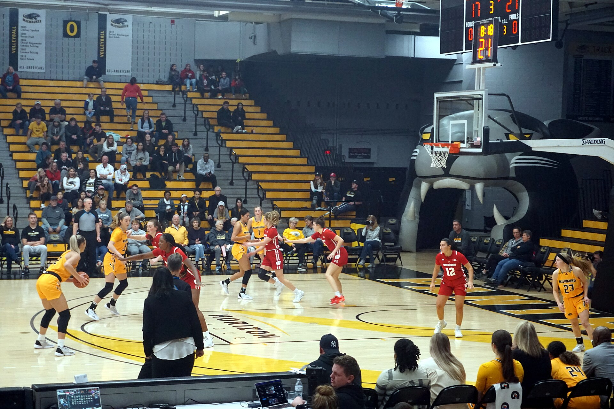
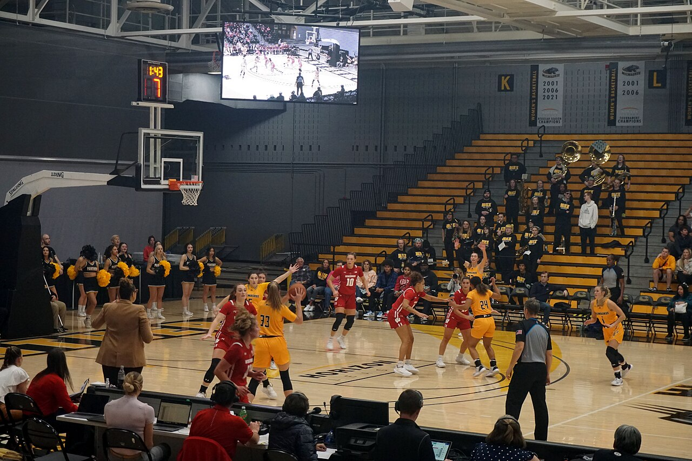
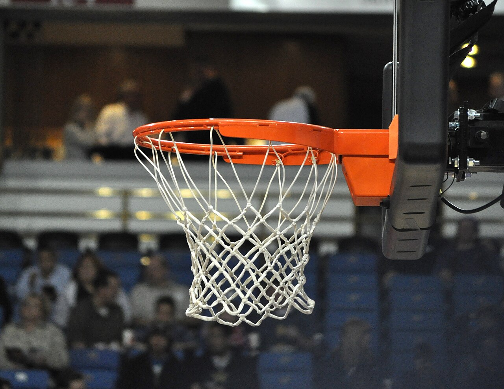
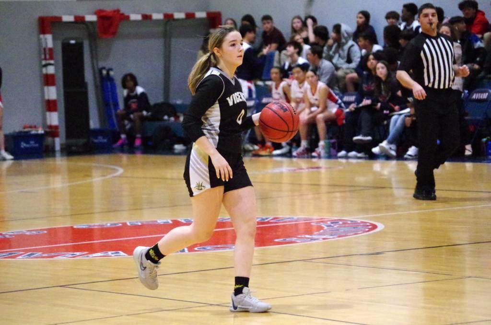
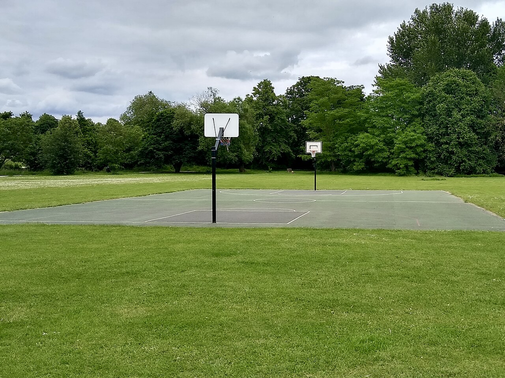

Basketball for Beginners
はじめての
バスケットボール
ルールも、技術も、道具も。コートに立つまでに知っておきたいことを4つのセクションにまとめました。
バスケットボールとは
About Basketball
5人対5人の2チームが、相手のゴールにボールを入れ合って得点を競うスポーツです。制限時間が終わった時点で、得点の多いチームが勝ちになります。

考案したのは、カナダ出身の体育教師ジェームズ・ネイスミス。1891年、冬のあいだ室内でできる運動を求められ、桃を入れる籠（basket）を体育館の手すりに取り付けたのが始まりとされています。「バスケット（籠）」と「ボール」という名前は、ここから来ています。
サッカーや野球に比べて1試合の得点が多く、1回の攻撃が終わるまでの時間も短いため、点差がめまぐるしく動きます。身長の高さが有利になる場面は多いものの、ドリブルや3ポイントシュートなど、背が低くても勝負できる役割がはっきり用意されているのも特徴です。
- 5コート上の人数（1チーム）
- 1891考案された年
- 213FIBA加盟の国と地域
試合の基本ルール
Basic Rules
覚えることは多く見えますが、まずは「得点」「時間」「反則」の3つを押さえれば試合を追えるようになります。

得点の数え方
どこからシュートを打ったかで点数が変わります。3ポイントラインの外側から決めれば3点、内側からなら2点、ファウルを受けた後に打つフリースローは1本につき1点です。
試合時間
FIBA（国際バスケットボール連盟）のルールでは10分×4クォーターの計40分。NBAは12分×4クォーターの計48分です。時計はボールが止まるたびに止まるので、実際の所要時間はこれより長くなります。
時間に関する制限
攻撃側がボールを持ち続けられないよう、細かい制限時間が決められています。
- 24秒ボールを保持してからシュートを打つまでの制限時間。
- 8秒自陣から相手陣（フロントコート）へボールを運ぶまでの時間。
- 3秒攻撃側が制限区域（ペイントエリア）に留まれる時間。
- 5秒相手に密着された状態でボールを持ち続けられる時間。
代表的な反則
ボールを持ったまま3歩以上歩くトラベリング、一度止めたドリブルを再開するダブルドリブル、相手に不当に接触するファウル。ファウルは1人5回（NBAは6回）で退場になります。
基本スキル
Fundamental Skills
試合で使う技術は、突き詰めると「運ぶ・渡す・入れる・取る・止める」の5つに整理できます。

ドリブル
手のひらではなく指の腹で押し出し、ボールは腰より低く。顔を上げてコート全体を見られるようになると、一気に視野が広がります。
パス
胸の前から真っすぐ投げるチェストパス、床で一度弾ませるバウンズパス、頭上から投げるオーバーヘッドパスが基本の3種類です。
シュート
走り込んでリング下で決めるレイアップ、跳びながら放つジャンプシュート、止まった状態で打つフリースロー。まずはレイアップから。
リバウンド
外れたシュートを拾うプレー。相手を背中で押さえる「ボックスアウト」で位置を取れるかどうかが勝負を分けます。
ディフェンス
膝を曲げて腰を落とし、両足を肩幅より広く。手より先に足を動かして、相手の進路の前に入り続けることが基本です。
フットワーク
ピボット（軸足を固定した方向転換）を覚えると、トラベリングを取られずにパスやシュートの角度を作れるようになります。
コートと用具
Court & Gear
正式なコートは意外とコンパクト。公園のハーフコートでも、基本の練習はひと通りできます。

コートの寸法（FIBA規格）
| コートの広さ | 28m × 15m |
|---|---|
| リングの高さ | 3.05m（床から） |
| 3ポイントライン | リング中心から6.75m |
| フリースローライン | バックボードから5.80m |
| リングの直径 | 45cm |
ボールのサイズ
年齢と性別でサイズが分かれています。自分に合わないボールだとシュートのフォームが崩れるので、最初の1球こそ慎重に選びたいところです。
| 7号球 | 一般・大学・高校の男子（周囲 約75cm／約600g） |
|---|---|
| 6号球 | 一般・大学・高校の女子（周囲 約72cm／約510g） |
| 5号球 | ミニバス（小学生）（周囲 約69cm／約470g） |
そろえたい道具
最低限必要なのはボールとシューズだけ。シューズは足首を支えるハイカットで、靴底のグリップが残っているものを選んでください。体育館では屋内用、公園では屋外用と、ソールの硬さが違う点にも注意しましょう。